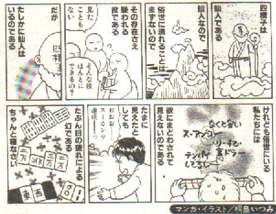

（２２）四槓子
役満貫。１雀頭４槓子で完成。牌種に制約はない。
中国麻雀では４つ目の槓の成立時点で四槓が成立し、嶺上牌を取得しないでその局終了となった。
最後が暗槓であれば、「カン」発声の後、同一牌４枚を明示した時点で成立した（中国麻雀には、国士無双は暗槓への搶槓可というルールはない）。
最後が大明槓であれば、ロン（和）発声のない打牌に対して「槓」と発声し、同一牌３枚を明示した時点で成立した。
最後が小明槓であれば、「槓」発声の後、明刻への加槓をなし、加槓牌に対し搶槓がないことが確定した時点で成立した。
４つめの槓が成立した時点で四槓算了（四槓流れ）によりゲーム終了であるから、本来の中国麻雀では、四槓子という役は無かった。しかし中国において、日本人グル＾プの中から、「１人で四槓するのは、極めて珍しい」というので、役満貫とするルールが登場した。それが中国ルールに逆輸入され、１人四槓のときは役満貫として認められるようになった。
それでも初期の四槓子は、四槓算了と同様、最後は嶺上牌を取得しないで成立となった。しかし日本麻雀では嶺上牌を取得しないのは中途半端として、まず嶺上牌の取得が必要というルールとなった(「13牌基準論」と云う)。
しかし嶺上牌を取得した後、アガリにならなくても捨て牌しなくても良いのであれば、嶺上牌を取得する意味はない。そこで「嶺上牌でアガリにならない場合は捨て牌する。捨て牌が栄和されなかったとき四槓子成立」というルールとなった。そしてさらに「四槓子だけ上らなくても成立というのはおかしい」というので、捨て牌後、単騎待ちを和了するという事になり、今日に至っている。
四槓子は幻の役満貫と言われるほど出現度が低いが、中国語では死棺子（棺桶）と音通するため、中国では槓々和とか十八羅漢（スーパーローハン）など、別名で呼称されることが多い。
※十八羅漢（じゅうはちらかん）とは、お釈迦様の18人の高弟のこと（四槓子が完成すると、手牌が18枚になるので）。
四槓子は副露和了が可能な役であるため、一般麻雀では包牌が指定されている（槓子を３副露しているゲーム者がいる場合の生牌）
別名・槓々和・十八羅漢・四道槓・十八学士・降々和(麻雀倶楽部)
英名・All kons(全部槓子)
・Four quadruplets(槓子4組)
・Four fours(槓子4組)
・Four sets of fours(槓子４組)